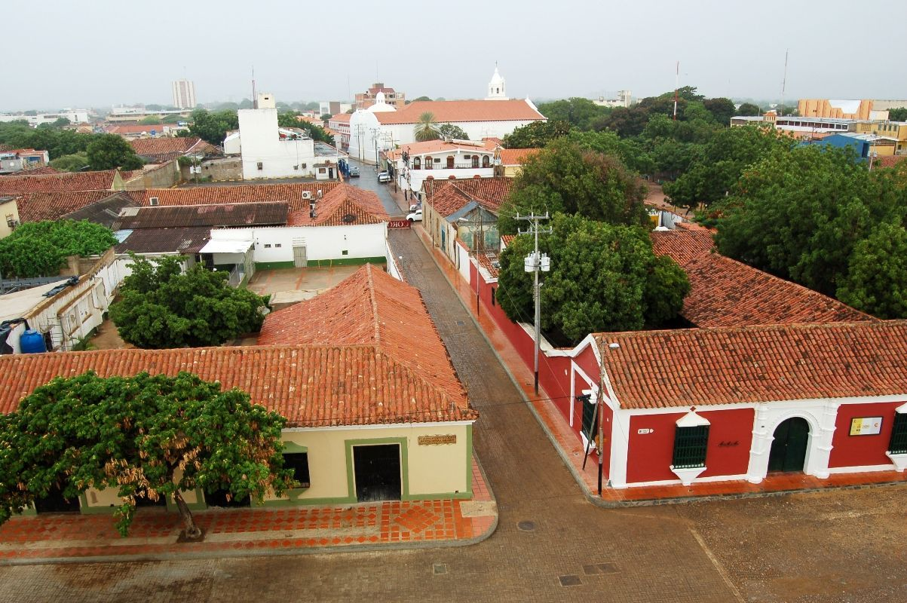
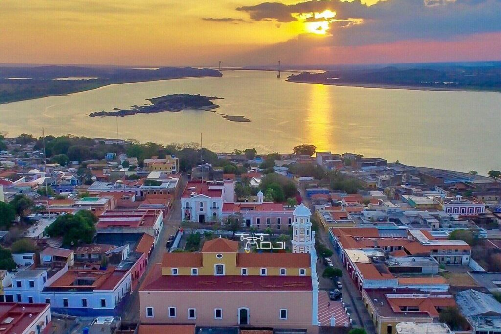
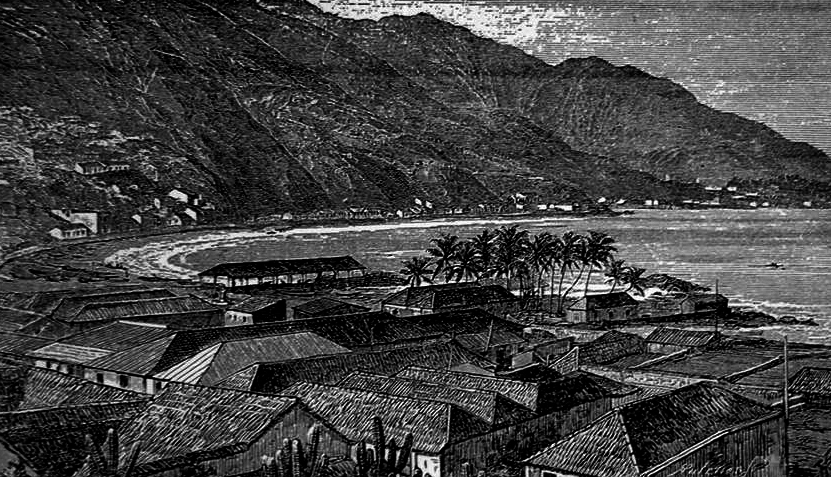
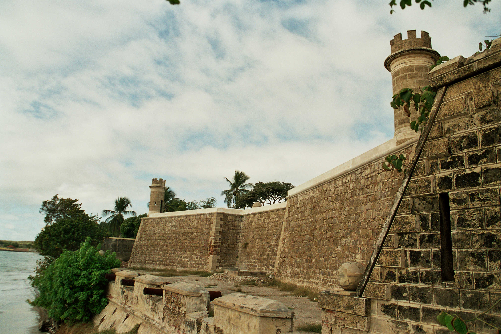

VENEZUELA'S HISTORICAL SITES
CORO & ITS PORT

Coro and its Port is Venezuela's only UNESCO World Heritage Site, recognized for its exceptional fusion of Spanish Mudéjar, Dutch, and indigenous architectural traditions. Founded in 1527, it is one of the oldest surviving towns in South America and served as the first capital of the Province of Venezuela. The Cathedral of Coro, built in 1583, is among the oldest churches in Venezuela, its tower walls still bearing the gun slits built to defend against pirate raids. The ornate Church of San Francisco and the vibrant yellow colonial mansion known as Casa Amarilla stand as proud testaments to five centuries of layered cultural history preserved within this remarkable city.
CIUDAD BOLÍVAR

Ciudad Bolívar, formerly known as Angostura, is one of the most historically charged cities in all of South America, sitting dramatically on the banks of the mighty Orinoco River. It was here that Simón Bolívar convened the Congress of Angostura in 1819, signing the decree that laid the foundation for the Republic of Gran Colombia. The Casa del Congreso de Angostura where this pivotal moment occurred still stands as a national monument. The sweeping Paseo Orinoco waterfront boulevard and the grand colonial cathedral complete a historic cityscape that feels frozen in the age of revolution and independence.
LA GUAIRA

La Guaira is Venezuela's oldest and most historically significant port city, serving as the primary commercial gateway to the country since the colonial era. Wedged between the Caribbean Sea and the steep slopes of the Avila mountain, its narrow cobblestone streets are lined with centuries-old colonial buildings painted in vivid tropical hues. The imposing Casa Guipuzcoana, once the headquarters of the powerful Basque trading company that controlled Venezuela's commerce, is the city's most iconic landmark. The historic port and the beautifully preserved colonial facades along its main streets offer an unfiltered glimpse into the commercial heart of Venezuela's colonial past.
CASTILLO DE SAN CARLOS

The Castillo de San Carlos de la Barra is a striking 17th-century Spanish colonial fortress built to guard the narrow entrance to Lake Maracaibo from pirate raids and foreign invasion. Rising from a small island at the lake's mouth, it is one of the best-preserved military fortifications in Venezuela. Its thick stone walls and cannon battery still point defiantly toward the water, while the dark prison cells within speak to its grim secondary role as a feared political prison. Walking through its ancient corridors is a powerful encounter with the raw authority and strategic might of the Spanish colonial empire in South America.